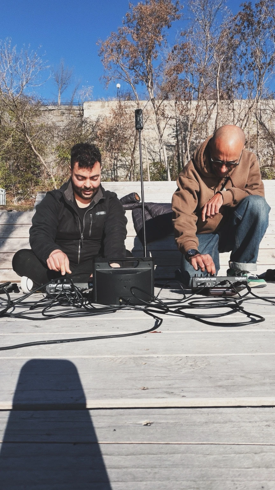
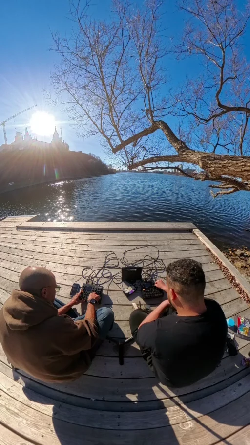
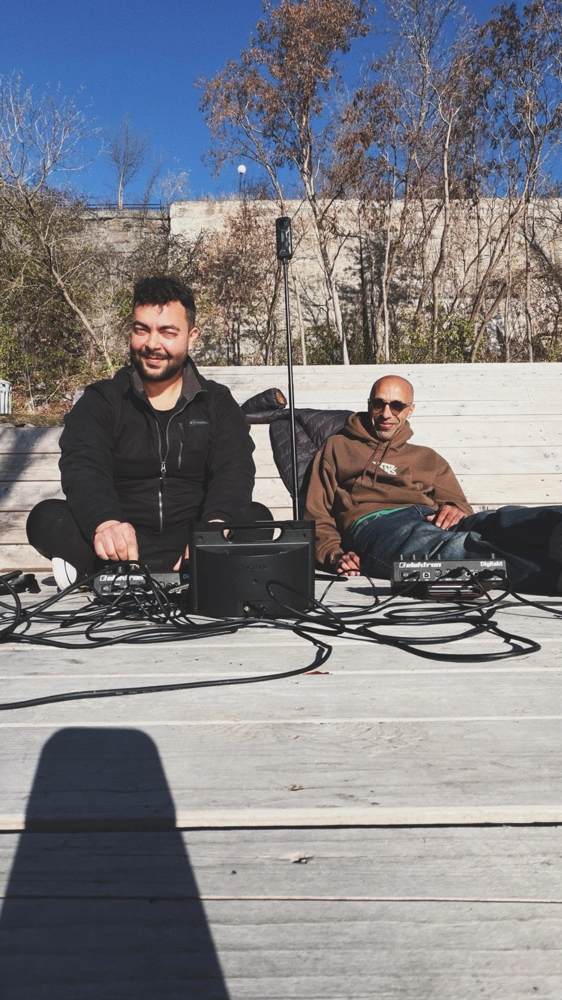
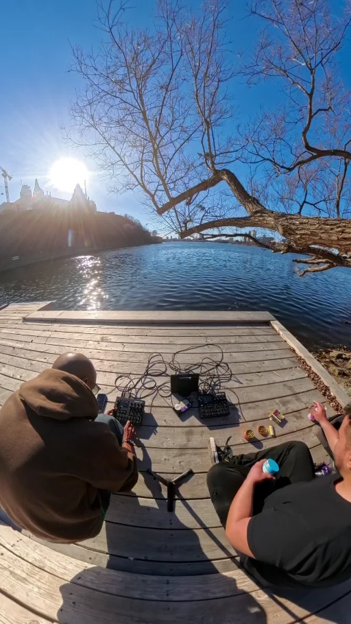

Skip to content
Sessions
Gallery
Workshops
HMM Gallery
Riverside session.
Brain Waves × Majorquad
2 films · 2 photographs

At the controls
Photograph

Session part 2
Film · 1:00

Dockside portrait
Photograph

Session part 6
Film · 0:54
Close
×